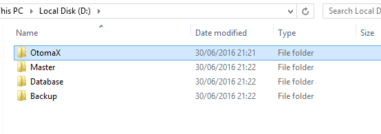

Mengatur Lokasi Instalasi
Harddisk Komputer sebaiknya di partisi minimal 2 bagian: Local Disc(C) dan Local Disc(D). Local Disc(C) dijadikan lokasi menginstall Sistem Operasi Windows, aplikasi - aplikasi yang dibutuhkan (misal: Yahoo Messenger, 7zip, Firefox, Microsoft Office) dan Software Pendukung OtomaX. Sedangkan Local Disc(D) dijadikan lokasi instalasi Software OtomaX.
Pada Local Disc(D) buat 4 folder bernama:
- Master, untuk menyimpan File Master Software Pendukung OtomaX, Driver, Software OtomaX, Team Viewer dan software lainnya.
- OtomaX, untuk lokasi instalasi Software OtomaX.
- Database, untuk lokasi Database OtomaX.
- Backup, untuk lokasi Hasil Backup Database OtomaX.

Dengan mengatur seperti di atas akan memudahkan dalam memaintenance Komputer Server di kemudian hari. Anda akan mudah mencari, dimana File Master, dimana instalasi Software OtomaX, dimana lokasi Database OtomaX dan dimana Hasil Backup Database OtomaX.
Catatan: Sebaiknya folder lokasi Hasil Backup Database OtomaX ditempatkan di Harddisk berbeda. Agar manakala Harddisk utama mengalami error Hasil Backup Database OtomaX tidak ikut error, karena berbeda fisik Harddisk.